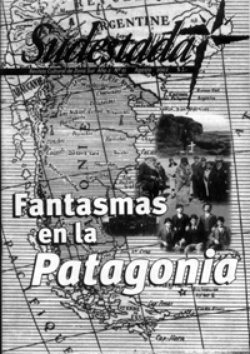

Buscar
Primer Aniversario
Edición N° 11
Agosto 2002
Revista bimensual
Comprar edición impresaSumario
- Fantasmas de la Patagonia
- Primer Aniversario
- Quique Pesoa: "Dejarte sin laburo hoy es peor que ponerte un revólver en la cabeza"
Compartir Articulo
Y pensar que nos daban por muertos al tercer número. La verdad, quién hubiese apostado un peso (no devaluado) por este puñado de supuestos periodistas con ansias literarias. Tal vez, ni nosotros mismos creíamos en algo de todo esto que pasó así, tan rápido.
En un año nos encontramos con dos países bien distintos. En aquel agosto de 2001, pensamos que peor no se podía estar, que en algún momento tenía que mejorar; no por una esperanza vana sino por el hecho de pretender un cambio profundo, en serio. Y nos mandamos, a pesar de los pronósticos apocalípticos (políticos y económicos).
Y el país cambió, pero para peor. Y seguimos, a pesar de la devaluación, la pesificación y demás contratiempos. Seguimos, con la mirada puesta adelante, con la alegría de los que no se rinden, defendiendo nuestra verdad, que no es la única pero que es la que mejor nos queda.
Fue un año de alegrías impensadas. El saludo de lectores desconocidos en sitios insólitos, las charlas con los grandes y humildes personajes que desfilaron en las entrevistas, el alivio de la revista impresa luego de largas horas de cierre en horarios que no tenían tregua.
También la sorpresa de ver nacer (y crecer, sobre todo) algo así como un "espíritu Sudestada" en propios y extraños, con todas esas ganas de sumar voluntades. Un año de incertidumbres políticas, de un gobierno que nadie eligió y nadie sabe cuando se irá, de juntar moneda tras moneda para depositarlas en la "cuenta corriente" de Ricardo, nuestro imprentero amigo.
Un año de intentar saber si la revista gustaba tanto como creíamos nosotros, siempre con la obligación de mejorar y escuchar a quienes nos querían ayudar (desde la buena o la mala leche). Un año de tristezas por la muerte de luchadores asesinados por el sistema, por las puertas cerradas en cualquier edificio más o menos oficial y en muchos "sagrados" recintos de cultura. La tristeza de ver la dispersión que reina entre los "promotores" culturales de la zona, de la cual muchas veces somos partícipes. El desinterés por el trabajo del otro, el gueto cultural que aleja a la gente, que no llega a los barrios más humildes, que trabaja con un círculo como una élite entendida.
Un año de esperanzas por la recepción de la gente que nos pide cambiar, seguir adelante, nos exige (como grupo y como personas) escuchar los reclamos de un pueblo que se cansó de que decidan por él, de ¿crecer?, de consolidarnos como una voz alternativa y soñar con vivir de esto que estudiamos, que hacemos con pasión, respeto y honestidad.
Cada uno a su manera. Nosotros elegimos este camino, el de aplaudir el talento de algunos grandes, el de evitar el panfleto y las consignas y preocuparnos en serio por intentar escribir bien, superando nuestros defectos. Recurriendo a nuestros referentes, descubriendo universos nuevos. Buscando, a través de estás páginas, otra forma de entender qué es eso que algunos definen como cultura; queriendo también borronear algunas ideas claras, otra forma de hacer política quizás. Sin soberbia, sumando y no restando, listos para escuchar y listos para decir lo que pensamos. Siempre.
Otro año que nos encontrará gambeteando la mala suerte y la mala leche de algunos, tirando paredes con los lectores, parando la pelota cuando nos equivoquemos, cambiando de frente para darle aire a nuestros pensamientos y haciéndole un gol de chiripa a quienes pensaron "independientes, de cultura y en zona sur, no duran ni un día". Pasó un año y aquí estamos. No está mal. Lo que viene, esta por verse. Por ahora, amigos lectores, hoy nos permitimos festejar esta jugada.
Comentarios

Sudestada
El colectivo de Revista Sudestada esta integrado por Ignacio Portela, Hugo Montero, Walter Marini, Leandro Albani, Martín Latorraca, Pablo Fernández y Repo Bandini.
Articulos más vistos


LIBRERÍA SUDESTADA

Colección infantil

Distribuidora de Libros

Suscripción

Sudestada en URUGUAY

Otros articulos de esta edición
Quique Pesoa: "Dejarte sin laburo hoy es peor que ponerte un revólver en la cabeza"
Es difícil confundir la voz de Quique Pesoa después de tantos años de escucharla en el aire. Siempre de frente, ...
 Nota de tapa
Nota de tapa
Fantasmas de la Patagonia
Un derrotado cacique araucano de frente al exterminio de su gente, un científico aventurero juntando bichos raros en tierras extrañas, ...